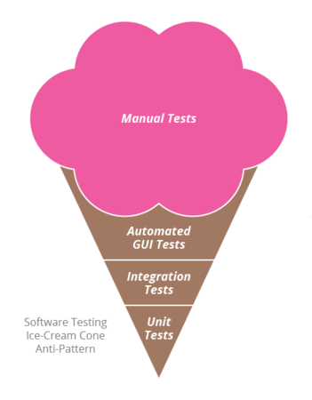
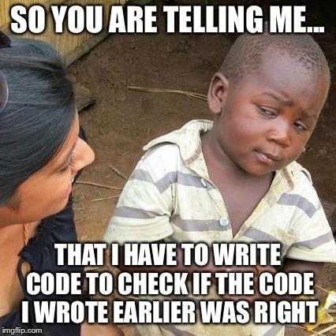

Chap 2 : Tests logiciels

M4104 - PEL : Agilité et bonnes pratiques de programmation
Institut Universitaire de Technologie de Bayonne et du Pays Basque
Robin Lucbernet - Christophe Marquesuzaà - Damien Urruty
DUT Informatique 2021 / 2022 - Semestre 4
Pourquoi tester ?
Approche boite noire
Approche boite blanche
Types de tests
- Tests unitaires
- Tests d'intégration / service
- Tests end-to-end
- Tests d'acceptance
- Tests de fumée (Smoke test)
- Tests exploratoires
- Tests de performance
- Tests manuels
- ...
Tests unitaires
- Vérifient le bon fonctionnement d'un morceau de code (unité)
- Ecrits avec du code
- 4 phases pour chaque test
- Initialisation
- Exercice
- Vérification
- Démontage
Tests unitaires - Caractéristiques
- S'exécutent très rapidement (quelques ms par test -> plusieurs secondes au total)
- Ecrits pour les programmeurs (souvent par les programmeurs)
- En général testent de la technique mais peuvent tester du fonctionnel
- Servent de documentation
Tests d'intégration/service
- Vérifient le bon assemblage de plusieurs composants
- Ecrits pour les programmeurs (souvent par les programmeurs)
Tests end-to-end
- Vérifient le bon fonctionnement du logiciel
- Ecrits pour le client et les programmeurs
- Exercent l'UI tel un utilisateur
- S'exécutent plus lentement (quelques secondes par test -> plusieurs minutes au total)
Tests d'acceptance
- Vérifient qu'une fonctionnalité fonctionne comme elle le devrait
- Ecrits pour le client et les programmeurs
- Peuvent se trouver plus ou moins proches du code
Tests de fumée
- Vérifient le logiciel dans les cas simples
- Le nom provient du hardware
- Tests manuels
Tests de performance
- Tests manuels
- Utilisation processeur
- Utilisation mémoire
- Utilisation disque
- Montée en charge
Tests manuels
- Réalisé en général par des testeurs
- Suivent en général un plan de test
Attention !
"Testing shows the presence, not the absence of bugs."

=> Il faut se mettre dans la peau de l'utilisateur !
Pyramide de tests

Pyramide de tests
- Eviter la duplication
- Pousser les tests vers le bas
Mauvaise pratique : le cône de glace
Tests unitaires (avec JUnit)
Nous allons utiliser ce projet comme exemple
https://github.com/la-urre/code-smellsAssertions
Vérification d'une condition, d'un état particulier
Au moins une assertion par cas de test !
Assertions (JUnit)
assertEquals(expectedValue, actualValue);
Privilégier la bibliothèque AssertJ pour des assertions proches du langage naturel (fluent)
assertThat(actualValue).isEqualTo(expected);
assertThat(actualList).contains(value);
Un test se décompose en 3 parties
- Etant donné (Given/Arrange) un état initial
- Lorsque (When/Act) on réalise quelque chose
- Alors (Then/Assert) on s'attend à un certain état final
Given / When / Then
@Test
void it_should_cost_74_for_one_beer() {
// GIVEN
Pub pub = new Pub();
// WHEN
int totalAmount = pub.printReceipt("hansa", false, 1);
// THEN
assertThat(totalAmount).isEqualTo(74);
}
Cas de test (Test case)
@Test
void it_should_cost_74_for_one_beer() {
// ARRANGE
Pub pub = new Pub();
// ACT
int totalAmount = pub.printReceipt("hansa", false, 1);
// ASSERT
assertThat(totalAmount).isEqualTo(74);
}
Cas de test (Test case)
- Privilégier le snake_case
- Espacer les Given / When / Then
- Un cas de test doit être assez court (max 7-8 lignes)
Suite de test (Test suite)
- Permet de grouper les tests
- En général une suite de test par classe
Montage / Démontage (Set up / Tear down)
Méthodes exécutées avant / après chaque cas de test
@BeforeEach
public void setUp() {
// initialisations
}
@AfterEach
public void tearDown() {
// nettoyages
}
@BeforeEach
public void setUp() {
// initialisations
}
@AfterEach
public void tearDown() {
// nettoyages
}
Couverture de code
La couverture de code, c'est quoi ?
- Mesure qui permet de voir la proportion de code de production exécutée par les tests
- S'exprime en général en pourcentage
- Permet de s'assurer qu'un morceau de code est couvert par les tests
- Dans certains IDEs on peut voir la couverture pour chaque ligne de code
Couverture de test
100% n'est pas un objectif
100% de couverture ne veut pas dire pas de bug
Tests unitaires et dépendances
Comment tester ce code ?
public int printReceipt(String drink, boolean student, int amount) {
// [...]
USBPrinter printer = new USBPrinter("/dev/ttyUSB0");
printer.print(drink, student, amount, price*amount);
// [...]
}
Doublure de test (Test Double)
Pourquoi ?
- Parfois on ne veut pas exécuter une partie de code pendant le test (envoi de mail, base de données, réseau, ...)
- On remplace donc l'implémentation réelle d'un module par une fausse implémentation
- Meilleure performance en utilisant une doublure
- On utilise le type de doublure le plus adapté en fonction des cas
Comment ?
- Il suffit d'implémenter une interface pour pouvoir avoir plusieurs implémentations
- Une dite de "production", une (ou plusieurs) de test
Bouchon (Stub)
- Permet de pré-configurer les futures réponses du module doublure
- Utile pour une base de données, un appel réseau, une saisie utilisateur...
Espion (Spy)
- Implémentation qui enregistre les interactions avec le module
- Permet de récupérer les interactions passées
Factice (Dummy)
- Doublure qui ne fait rien de particulier
- Utile pour créer une doublure minimale dont on ne se sert pas vraiment
Faux (Fake)
- Implémentation qui fonctionne mais qui prend des raccourcis
- Exemple : une base de données en mémoire
Simulacre (Mock)
- Permet de pré-configurer les futures réponses du module doublé (comme le bouchon)...
- ... et de vérifier les interactions en fin de test (comme l'espion)
- Des bibliothèques peuvent aider comme par exemple Mockito
En réalité la distinction est rarement faite et on parle de "mocks" dans tous les cas
Automatisation des tests
- Servent comme filet de sécurité (harnais de test)
- Vérifient la non-régression
Tests F.I.R.S.T.
Bonnes pratiques pour l'écriture de tests
Tests F.I.R.S.T.
Rapides (Fast)
- Des tests trop longs freinent le développeur
- Plus le nombre de tests est important, plus les tests doivent être rapides
- Une durée idéale est quelques millisecondes par test
Tests F.I.R.S.T.
Isolés / Indépendants (Isolated / Independent)
- Un test doit vérifier un et un seul comportement
- Pas de dépendance sur l'ordre d'exécution
- Pas de dépendance sur l'environnement
- Permet de lancer les tests en parallèle
Tests F.I.R.S.T.
Répétables (Repeatable)
- Pas de dépendance sur l'environnement
- Comportement déterministe (pas de test dépendant du temps ou de l'aléatoire)
Tests F.I.R.S.T.
Auto-Validant (Self-Validating)
- Pas besoin d'intervention manuelle
- Un test passe ou échoue, pas d'autre état possible
Tests F.I.R.S.T.
Exhaustifs / Au bon moment (Thorough / Timely)
- Cas nominaux
- Cas alternatifs
- Cas d'erreur (mauvais paramètres, ...)
- De préférence écrits avant le code qui va avec
- A relier avec le diagramme des cas d'utilisation UML et ses scénarios (CDCF)